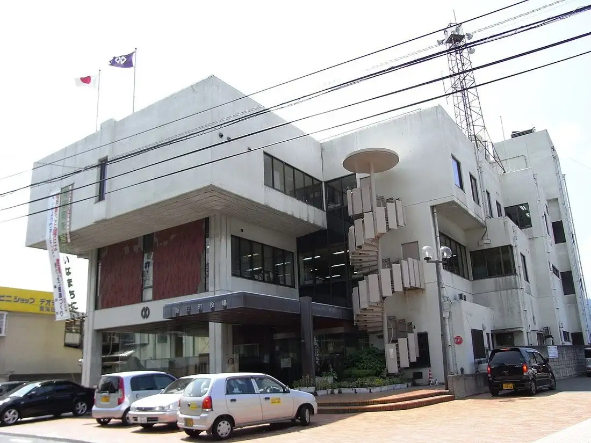
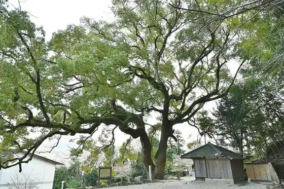

Kaita
Kaita · Hiroshima
Kaita
Highlighted on the Hiroshima map.

Stay
Hotel Asuton Plaza Hiroshima 2 Gokan (2026 Nen 5 Gatsu 1 Nisshin Chiku Opun)
Kaita Chuo Hotel
Dining
Kittan
Yakitori Sangokushi
Izakaya Take no Ko
Konditorai Motsuaruto Kaita Mise
Yutaka Shokudo
Yakiniku Tetchan Kaita Mise
Sanuki Ya Kaita Mise
Yua Kafe
O Konomi Yaki Teppanyaki Tokugawa Kaita Mise
Niku Tofu to Remonsawa Taishushokudo An Be Kaita Shi Eki Minamiguchi Mise
LOUPE COFFEE STAND Kaita Mise
Aji no Kan
Gyukaku Kaita Mise
Yatsurugi Den Kaita Minamimoto Town Mise
Uotami no Sushi Kaita Shi Kitaguchi Ekimae Mise
Utsuwa
Onsen
Hotel Asuton Plaza Hiroshima 2 Gokan Public Bath
Sights
Kyu Chiba Ie House
Kumano Shrine
Taishi Tera
Oda Mikio Memorial Museum
Kaita Kannon Men no Kusu no Ki
